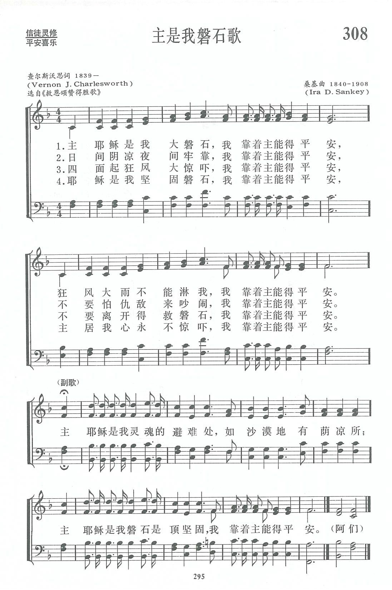
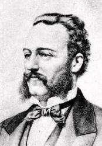

|
|
讚美詩(新編) |
|
1 The Lord's our rock, in Him we hide, 2 A shade by day, defense by night, 3 The raging storms may round us beat, 4 O Rock divine, O Refuge dear, |
|
|
https://www.zanmeishige.com/tab/13981.html?songbook=1&index=308
 A Shelter in the Time of Storm
|
|
|
|
|


| Text: | A Shelter in the Time of Storm |
| Adapter: | Ira D. Sankey, 1840-1908 |
| Author: | Vernon J. Charlesworth, b. 1839 |
| Tune: | [The Lord's our Rock, in Him we hide] |
| Composer: | Ira D. Sankey, 1840-1908 |
| Short Name: | Vernon J. Charlesworth |
| Full Name: | Charlesworth, Vernon J., 1838-1915 |
| Birth Year: | 1838 |
| Death Year: | 1915 |
Charlesworth, Vernon J. ,
was born at Barking, Essex, on April 28, 1839, and educated at Homerton College. In 1864 he became co-pastor with the Rev. Newman Hall at the old Surrey Chapel, and in 1869 the Head Master of Mr. Spurgeon's Stockwell Orphan¬age. Mr. Charlesworth has published The Life of Rowland Hill, &c, 1876, and, in co-operation with Mr. J. Manton Smith, Flowers and Fruits of Sacred Song and Evangelistic Hymns. To this work he contributed:—
Tune Information
| Title: | SHELTER (Sankey) |
| Composer: | Ira David Sankey (1885) |
| Meter: | 8.8.8.8 with refrain |
| Incipit: | 51112 34533 33343 |
| Key: | E♭ Major |
| Copyright: | Public Domain |

第308首 主是我磐石歌 The Lord is our Rock，in Him we hide _V.J.Charlesworth
The Lord is our Rock，in Him we hide
《主是我磐石歌》是英国圣公会福音派牧师查尔斯沃思(V.J.Charlesworth，1839一1915)所作。查氏曾在萨里礼拜堂任牧师，一度任英国司布真孤儿院院长，热心主道，致力于布道工作，且力倡尊重科学，如为教友接种牛痘苗等。除牧养教友外，他还为近代福音派牧师希尔(R.Hill，1744一1833)写传，并著有《圣歌与福音派圣诗开花结果》一书。
这首诗作于188O年。据曲作者桑基(事略参阅第54首)介绍说，他是从伦敦一张小报上见到了这首诗。诗的原名叫《邮差(POSTMEN)》，传说这是英国北海岸一带渔民在风浪中返航快抵海港时常唱的一首诗，经桑基改编使其更易为信众所唱颂，
调名《荫凉所(A SHELTER)》，是副歌的第二句。
Words: Vernon John Charlesworth (b. Apr. 28, 1839; d.
Jan. 5, 1915)
Music: Ira David Sankey (b. Aug. 28, 1840; d. Aug. 13,
1908)
Links:
Wordwise Hymns (Vernon
Charlesworth, and Ira
Sankey)
The Cyber
Hymnal
Note: The Wordwise Hymns links tell what is known of Vernon Charlesworth, and give more information on Ira Sankey. The Cyber Hymnal link give you pictures of both men. Mr. Charlesworth wrote the original text around 1880. Five years later, Ira Sankey says he saw it printed in a small London paper called The Postman. It was being sung by the fishermen in the north coast of England, to what Sankey called “a weird minor tune.” He wrote the more singable melody, and likely added the refrain himself.
CH-1) The Lord’s our Rock, in Him we hide,
A shelter in the time of storm;
Secure whatever ill betide,
A shelter in the time of storm.
Oh, Jesus is a rock in a weary land,
A weary land, a weary land;
Oh, Jesus is a rock in a weary land,
A shelter in the time of storm.
The twin images of a storm, and a sheltering rock, are used frequently in Scripture to depict the trials and troubles of the believer’s life, and the protecting care of the Lord. It’s not surprising that many of these appear in the book of Psalms, which is a book representing the devotional life of the saints–and it was also the hymn book of Israel, and the early church.
“Give ear to my prayer, O God, and do not hide Yourself from my supplication….I would hasten my escape from the windy storm and tempest” (Ps. 55:1, 8). “The pangs of death surrounded me, and the floods of ungodliness made me afraid” (Ps. 18:4). “You rule the raging of the sea; when its waves rise, You still them” (Ps. 89:9). “You…still the noise of the seas, the noise of their waves, and the tumult of the peoples” (Ps. 65:7). “He calms the storm, so that its waves are still. Then they are glad because they are quiet; so He guides them to their desired haven” (Ps. 107:29-30).
“To You I will cry, O LORD my Rock” (Ps. 28:1). “The LORD is my rock and my fortress and my deliverer; my God, my strength, in whom I will trust; my shield and the horn of my salvation, my stronghold” (Ps. 18:2). “He only is my rock and my salvation; He is my defense; I shall not be greatly moved….In God is my salvation and my glory; the rock of my strength, and my refuge, is in God” (Ps. 62:2, 7). “The LORD has been my defense, and my God the rock of my refuge” (Ps. 94:22).
We should further note that the Lord Jesus Christ is described as a rock, and as the foundation and chief cornerstone of the church (Eph. 2:19-20; I Pet. 2:6-7). “For no other foundation can anyone lay than that which is laid, which is Jesus Christ” (I Cor. 3:11). The Apostle Paul also says that He is the same One who aided Israel in the wilderness: “That Rock was Christ” (I Cor. 10:4). Whenever we find ourselves tossed about by the storms of life, it is a wonderful comfort to know that the Lord of the storm is with us (cf. Matt. 8:23-27).
CH-4) O Rock divine, O Refuge dear,
A shelter in the time of storm;
Be Thou our helper ever near,
A Shelter in the time of storm.
Questions:
1) What are some of the “storms” we commonly face in our lives,
physical, emotional, spiritual, relational, financial, and so on?
1) What kind of storms are you facing in your life today? Take a look once more at the Scriptures quoted above, and make them your own prayer to the Lord?
Links:
Wordwise Hymns (Vernon
Charlesworth, and Ira
Sankey)
The Cyber
Hymnal
https://wordwisehymns.com/2012/05/09/a-shelter-in-the-time-of-storm/